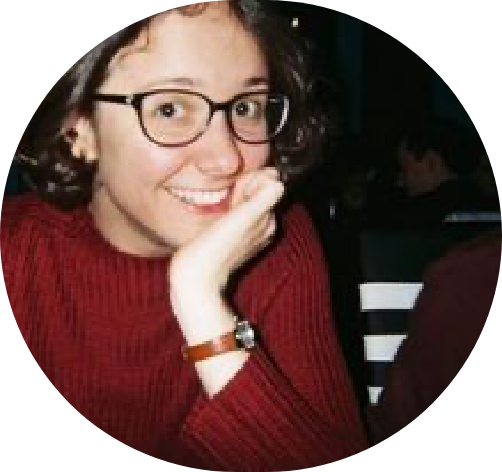

Helen is a British ecopoet with three collections, Hedge Fund, And Other Living Margins (2012), ECOZOA
(2015), acclaimed as ‘a milestone in the journey of ecopoetics’, and The Mother Country (2019) exploring
dispossession and British colonial history.
Helen offers online and onsite mentoring, workshops and retreats, through her programme ‘Wild Ways to Writing, and works with students internationally. Her work has been supported by Arts Council England, and she has recently collaborated on RiverRun, a cross arts-science project to examine and respond to pollution in Poole Bay and its river systems.
www.helenmoorepoet.com
Helen offers online and onsite mentoring, workshops and retreats, through her programme ‘Wild Ways to Writing, and works with students internationally. Her work has been supported by Arts Council England, and she has recently collaborated on RiverRun, a cross arts-science project to examine and respond to pollution in Poole Bay and its river systems.
www.helenmoorepoet.com
ABOUT The judges

Gregg Kleiner
Gregg Kleiner is the author of the novel Where River Turns to Sky (HarperCollins), and a finalist for both
the Paterson Fiction Prize and the Oregon Book Award (which was optioned for a feature film by FOX
Searchlight). He has worked as a wildlife biologist, journalist, and dairy goat farmer, and his writing has
appeared in Orion, The Sun, The Saturday Evening Post, terrain, Whitefish Review, and elsewhere. His first
book for kids (and their grownups), Please Don’t Paint Our Planet Pink, asks what might happen if we could
see CO2 in the atmosphere… as pink!
He believes that if we’re going to have any chance of slowing the climate crisis, we must immediately change the way humanity does almost everything - from consuming far less and rebuilding a sense of true community, to respecting all life and listening to the wisdom of Indigenous Peoples and the elders among us. The climate work currently underway worldwide by young people gives him hope.
He believes that if we’re going to have any chance of slowing the climate crisis, we must immediately change the way humanity does almost everything - from consuming far less and rebuilding a sense of true community, to respecting all life and listening to the wisdom of Indigenous Peoples and the elders among us. The climate work currently underway worldwide by young people gives him hope.

Kara Laing
Aasiya is a teacher, book-lover, Green Party campaigner, and ‘all-round eco-nut’.
She always felt passionately that looking after nature was something imperative and urgent - ever since her days as a teenager knocking on doors to collect money for wildlife sanctuaries from neighbours who said she was ‘too young’ and that they’d be ‘having a word’ with her parents. Aasiya’s favourite quote is ‘Love the animals. God has given them the rudiments of thought and joy untroubled. Don’t trouble them, don’t harass them, don’t deprive them of their happiness, don’t work against God’s intent.” (Fyodor Dostoevsky)
She always felt passionately that looking after nature was something imperative and urgent - ever since her days as a teenager knocking on doors to collect money for wildlife sanctuaries from neighbours who said she was ‘too young’ and that they’d be ‘having a word’ with her parents. Aasiya’s favourite quote is ‘Love the animals. God has given them the rudiments of thought and joy untroubled. Don’t trouble them, don’t harass them, don’t deprive them of their happiness, don’t work against God’s intent.” (Fyodor Dostoevsky)

Aasia Bora
Ellen studied English at university and has been a primary school teacher in London for 5 years. She is
currently teaching Year 5 at a school in Bethnal Green. Every day, she sees how much anxiety about climate
change affects the children she is working with. She also gets to see just how creatively these children
solve problems and look for alternative versions of the future. Over the course of this competition, it has
been wonderful to see some of those visions come to life in writing.
Ellen Ellis
Dr. Kara Laing is an engineer who has been a member of XR Engineers and Scientists for Extinction Rebellion
(who aim to help scientists with their activism and activists with their science) since 2018. After
completing a Ph.D. in Applied Mathematics, she started working as a mechanical engineer, building computer
models to help designers make their products better. Kara spent a decade as a science/engineering outreach
volunteer with school children (from Year 2 to Year 11). In her spare time, she loves immersing herself in
the other worlds that books bring.
Helen Moore

Lovis Geier

Dr. Lovis Geier is an ecologist who loves to incorporate her nerdiness into her works of eco-fantasy and
vice versa, incorporating storytelling and fiction into her science communication work. In her academic
life, she focuses on population ecology, dispersal, and animal movement in the marine environment - all in
front of a laptop because she works in silica, meaning building computer models to do all kinds of fancy
things. Her writing life is mostly lived on her YouTube channel Ecofictology, where she talks all about
reading and writing eco-fiction and how it can be used as a science communication tool. She hopes to
continue bridging these two worlds as she tries to find a way to bring her science to the widest audience
possible.
Zack is a London Assembly member and the Green Party National Democracy spokesperson. He’s gay, Jewish and
vegan - and not a fan of labels! Before politics, Zack was fully immersed in the gig economy having been an
actor, co-run nightclubs, and worked in schools and universities.
Zack thinks it’s incredibly important to have concrete political action and legislation - society also needs its creatives and visionaries who can connect dots and see alternative and better ways.
Zack thinks it’s incredibly important to have concrete political action and legislation - society also needs its creatives and visionaries who can connect dots and see alternative and better ways.

ZacK Polanski


About
the judges
Home
Donate
Contact
Stories